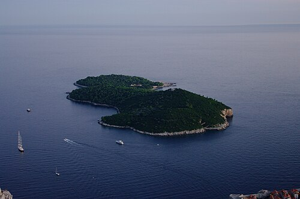
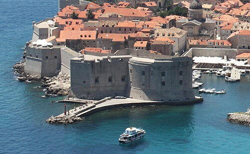
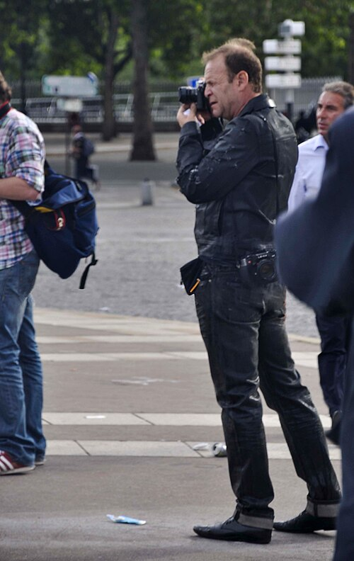

This map shows 17 of the most-searched sights in Dubrovnik as photo spots, ranked by how often people search for them: Lokrum Island, City Walls, Banje Beach, St Blaise's Church and Pile Gate lead the list. Every spot has a pin on the subject and a phone icon showing where to stand, with tips for shooting it on your phone: which lens to use, how to frame it, a settings tip and the best time of day. Directions and Navigate buttons take you to the standing point on foot or by public transport. 3 spots are free to view; the full map is for members.
The 3 free photo spots
1Lokrum

Lokrum is a small wooded island just off Dubrovnik, about 600 metres from the city, stretching from north-west to south-east. It photographs well because it gives the sea view a calm, green shape on the horizon, set against the pale stone of the Old Town. This spot is a cliff-side view of it, so you are photographing the island from the mainland rather than on it. The island has a long story. A Benedictine abbey was founded there in 1023, and in 1859 Archduke Maximilian had a mansion and garden laid out. Fort Royal, built under French rule, stands on the highest point, 96 metres above the sea. Peacocks brought over by Maximilian still live on the island. For a phone photo, aim to place Lokrum on one of the gridline thirds with plenty of sea and sky around it. That makes the island feel properly distant and gives the picture a calm, simple shape. If you also want a layered coastal view, Banje Beach shows Lokrum between the beach and the Old Town walls. Bernarda Shawa looks south over the roofs and walls towards the island.
Where it is: On the cliffs just outside the south wall of Dubrovnik's Old Town, facing the sea. Lokrum lies across the water to the south-east.
Shooting it on your phone
Lens: Start with the default lens (1x) to show the island with the open sea around it. Then try the telephoto (2x-5x, depending on your phone) to bring Lokrum closer and fill more of the frame. Use the ultra-wide (0.5x) only if you want the cliff edge and a lot of sky in the picture.
Where to stand: Stand at Buža Bar (cliff terrace outside the city wall, looking out over the sea). Lokrum sitting on the horizon over open water, with the city wall behind the photographer. Face south-east towards the island.
Framing: Turn on the gridlines and put the horizon on the lower third line, with Lokrum on one of the side thirds. Keep the sea in the foreground so the island has room. If you want a different angle, Banje Beach shows Lokrum between the beach and the Old Town walls.
Settings tip: Tap on the island to focus, then slide the exposure down a touch so the sky and sea stay rich rather than washed out. Hold the phone steady with both hands when you zoom in, as the island is far away and any shake will show.
Best time: Sunset, when guides mention golden light. Buža Bar is open only in spring and summer, so check this before you go.
2Walls of Dubrovnik

Dubrovnik's city walls wrap around most of the Old Town in one unbroken stone circuit of about 1,940 metres, rising to roughly 25 metres at their highest. Most of what you see was built between the 13th and 17th centuries. Towers, bastions and forts break up the line, and the walls were added to UNESCO's World Heritage list together with the Old Town in 1979. For a phone photo, the best view is from outside and below. From these steps the pale stone, the terracotta roofs behind it and the West Harbour all fit into one frame, and you don't need a walls ticket to stand there. The steps also give you a natural foreground: the handrail, the stone treads or a bit of greenery help lead the eye towards the walls. Inside the walls you get the rooftop views, but you can't see the walls themselves, so this outside angle shows their scale much better. If you want a rooftop panorama as well, Tvrđava Minčeta looks over the Old Town roofs and the sea, and Iza Grada frames the walls from outside the ramparts. The walls are very busy in summer, so expect other people on the steps too.
Where it is: On the western side of Dubrovnik's Old Town, outside the walls on the path up to Fort Lovrijenac, close to the West Harbour. The walls themselves circle the Old Town.
Shooting it on your phone
Lens: Start with the ultra-wide (0.5x) to fit the walls, the roofs and the harbour into one frame. Then switch to the default lens (1x) for a calmer, less stretched view. If your phone has telephoto (2x-5x), use it to pick out a single tower or a stretch of wall.
Where to stand: Stand on Skalini Dr. Marka Foteza (stairs on the climb up to Fort Lovrijenac, outside the walls). The walls and Old Town seen from outside and below, with the West Harbour in the same frame.
Framing: Switch on the gridlines and put the line of the walls along the lower or upper third, leaving the harbour on one side. Use a step or handrail in the foreground to add depth. Take a few shots from different steps, because each one changes how much of the harbour you see. For a rooftop panorama as an alternative, Tvrđava Minčeta is recommended for its view over the Old Town and the sea.
Settings tip: Tap the walls to set focus, then slide the exposure down a little so the pale stone and the sky keep their detail. Keep the phone steady against the handrail. Panorama mode can work along a wide stretch of the harbour, but wait for people to pass before you start.
Best time: Early morning or later in the afternoon is usually calmer and has softer light. Midday in summer is the busiest and the harshest.
3Banje Beach

Banje is Dubrovnik's pebble beach just outside the Old Town, and it photographs well because the view has layers. Sea and beach sit in the foreground, the Old Town stands behind them, and Lokrum Island closes the frame. The best-known angle is from the street above, at the top of the stairs down to the beach. From there you look down onto the pebbles and the water, which gives the picture depth and keeps other people's heads out of the foreground. Photo guides treat this raised spot as the classic one, and it is the easiest to reach on foot from the Old Town. The views from above are good all along the beach, so you can walk a little to either side and try a slightly different angle. Be aware that the beach has paid sunbed and bar areas, and the free strip is narrow. In July and August it is crowded with cruise day-trippers, so early morning is the calmest time for a clean shot. In winter the sunbeds and bars are removed, which gives a tidier picture. Take a wide shot first to show the whole scene, then a closer one picking out the Old Town or Lokrum. Check that the edges of your frame are straight, because the sea gives you a clear horizon to line up against.
Where it is: Banje Beach is on the edge of the Old Town in Dubrovnik. The viewpoint is on the street Frana Supila, above the beach.
Shooting it on your phone
Lens: Start with the default lens (1x) for the view down onto the beach. Switch to ultra-wide (0.5x) if you want the whole beach, the Old Town and Lokrum in one frame. Use the telephoto (2x-5x, depending on your phone) to pick out Lokrum Island or the Old Town walls.
Where to stand: Stand on Frana Supila (at the top of the stairs down to the beach). A raised angle looking down onto the pebble beach, with the Old Town and Lokrum Island behind it.
Framing: Turn on gridlines and place the horizon on the upper or lower line, with the beach filling the lower part of the frame. Let the Old Town and Lokrum sit in the background. For a different view, a low angle from the beach at the east end looks along white rock formations towards the Old Town. The rocks may be slippery, so take care.
Settings tip: Tap on the beach or the Old Town to set focus, then drag the exposure slider down a little so the bright sea and sky keep their colour. Take a few shots in case someone walks through the frame.
Best time: Early morning is the least crowded time, especially in July and August. Winter is cleaner for photos because the beach concessions are removed.
14 more spots for members
These spots are on the map as grey numbered pins. Where to stand, the phone tips, photos and directions for them come with Explorer membership.
- 4St Blaise's Church · members
- 5Pile Gate · members
- 6Stradun · members
- 7Rector's Palace · members
- 8Fort Lovrijenac · members
- 9Sponza Palace · members
- 10Mount Srđ · members
- 11Franciscan Friary · members
- 12Dubrovnik Cathedral · members
- 13Minčeta Tower · members
- 14Onofrio's Fountain · members
- 15Franjo Tuđman Bridge · members
- 16Fort Bokar · members
- 17Dubrovnik Bell Tower · members
Get every spot with Explorer membership
Explorer opens every spot on every map in the library: where to stand, how to frame it on your phone and how to get there, plus the Xdatrys Maps app with maps saved on your phone for use without signal. $9.99 a month or $59.99 a year; cancel any time.
Join Explorer Compare free and Explorer
Not ready to join?
Get Pocket Lens, our free daily smartphone travel photography newsletter.
Free, and you can unsubscribe at any time. If the form does not show, sign up on our newsletter page.
Questions
What are the top photo spots in Dubrovnik?
The first three on this map are Lokrum Island, City Walls and Banje Beach. They are ranked by how often people search for them. The full map has 17.
Where should I stand to photograph Lokrum Island?
Stand at Buža Bar (cliff terrace outside the city wall, looking out over the sea). Start with the default lens (1x) to show the island with the open sea around it.
When is the best time to photograph City Walls?
Early morning or later in the afternoon is usually calmer and has softer light. Midday in summer is the busiest and the harshest.
How do I get to Banje Beach?
The viewpoint is on the street Frana Supila, at the top of the stairs that lead down to Banje Beach, and it is the easiest viewpoint to reach from the Old Town.
Credits
Map data © OpenStreetMap contributors (ODbL); base map built with Protomaps from OpenStreetMap data. Photos from Wikimedia Commons, credited under each photo with their licence. Background reading for the free spots: Lokrum, Walls of Dubrovnik (Wikipedia, CC BY-SA). Access rules and opening times change: check before you go.